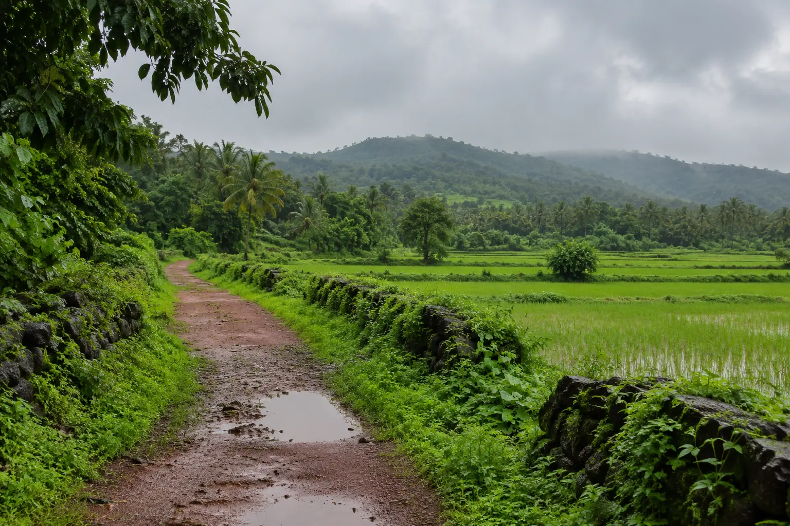

Palolem & Agonda
South Goa's calm bays and boutique resorts for smaller, slower weddings. Palm-framed sunsets with soft, even light.
Best for: intimate weddings, honeymoonsCalm bays, boutique resorts and palm-framed sunsets. South Goa suits couples who want a quieter wedding or a honeymoon shoot without the crowds of the north.
Palolem and Agonda are gentle, curved bays lined with palms, and the resorts around them are smaller and slower. They suit intimate weddings, honeymoons and anniversaries. Further along the coast, Cabo de Rama gives clifftop views and an old fort for portraits. Our team travels from Morjim for every South Goa booking, and travel is included in the quote.
South Goa's calm bays and boutique resorts for smaller, slower weddings. Palm-framed sunsets with soft, even light.
Best for: intimate weddings, honeymoons
Emerald fields, moody skies and waterfalls. Fewer people and more available dates for couples who like drama.
Best for: monsoon couple shootsCabo de Rama. Clifftop views and the old fort walls on the southern coast, worth the drive for portraits when the light is right.
Smaller guest lists at boutique resorts and beach venues, covered in photographs and film.
Explore →A relaxed evening session at a spot near your resort.
Explore →One calm bay or a South Goa day combined with heritage streets, planned around the light.
Explore →Our studio is in Morjim and travel anywhere in Goa is included in every quote.
Yes. Our team is based in Morjim and covers weddings and shoots across South Goa. Travel and stay anywhere in Goa are included in the quote.
For intimate weddings and couples who want calm, yes. Palolem and Agonda have smaller resorts and quieter beaches than the north.
The bays at Palolem and Agonda for palm-framed sunsets, and Cabo de Rama for clifftop portraits. We suggest a spot near where you are staying.
For November to February, eight to twelve months ahead. Monsoon and shoulder months often have dates at shorter notice.
More of Goa